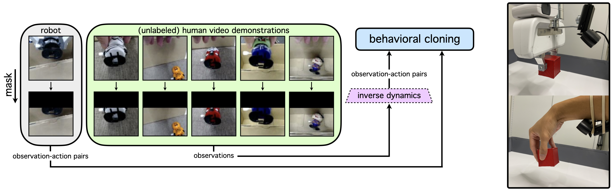

Giving Robots a Hand: Learning Generalizable Manipulation with Eye-in-Hand Human Video Demonstrations
Giving Robots a Hand: Learning Generalizable Manipulation with Eye-in-Hand Human Video Demonstrations
Abstract (abridged). Eye-in-hand cameras have shown promise in enabling greater sample efficiency and generalization in vision-based robotic manipulation. However, for robotic imitation, it is still expensive to have a human teleoperator collect large amounts of expert demonstrations with a real robot. Videos of humans performing tasks, on the other hand, are much cheaper to collect since they eliminate the need for expertise in robotic teleoperation and can be quickly captured in a wide range of scenarios. Therefore, human video demonstrations are a promising data source for learning generalizable robotic manipulation policies at scale. In this work, we augment narrow robotic imitation datasets with broad unlabeled human video demonstrations to greatly enhance the generalization of eye-in-hand visuomotor policies. On a suite of eight real-world tasks involving both 3-DoF and 6-DoF robot arm control, our method improves the success rates of eye-in-hand manipulation policies by 58% (absolute) on average, enabling robots to generalize to both new environment configurations and new tasks that are unseen in the robot demonstration data.
Method Overview
As shown below on the left, we incorporate diverse eye-in-hand human video demonstrations to train behavioral cloning policies that can generalize to new environments and new tasks outside the distribution of expert robot imitation data. In our method, images are masked to close the domain gap between the human and robot observations. Action labels for human video demonstrations are inferred by an inverse dynamics model that is trained on robot play data. We record robot and human eye-in-hand videos with the low-cost camera configurations shown below on the right.

Generalizing to New Environments
In this section, we show rollouts of learned policies being evaluated in environment configurations outside the distribution of expert robot demonstrations. In our experiments, we evaluate behavioral cloning policies trained on four different combinations of eye-in-hand video data:
robot = robot demos only
robot + play = robot demos + robot play data
robot + human w/ CycleGAN = robot demos + CycleGAN-translated human demos
robot + human w/ mask (ours) = robot demos + human demos with image masking
In our qualitative analysis, we place an emphasis on the toy packing task, which is the most challenging task in this work due to the presence of heavy visual occlusion, 6-DoF robot arm control, and small target objects. We also include some analysis on other tasks afterwards.
Toy Packing Task
Here are sample evaluation trials where the simplest baseline policy trained only on robot demonstrations fails to generalize to unseen target objects, while our method succeeds. Overall, the former policy often fails to reach the target object; in cases where it does reach it, the robot consistently fails to even grasp the toy. In contrast, our method successfully completes the full task given varied target objects since it learns to generalize from the visually diverse human demonstrations seen at training time. All clips are sped up by 7x.
robot
robot + human w/ mask (ours)
Below are sample rollouts of the other two baseline methods. Although these methods successfully complete the task in some cases, they are far less reliable than our method. In particular, the policy trained on play data often exhibits unstable, noisy behavior, which we attribute to the inherent multimodality and task-agnostic nature of the play data. On the other hand, the policy trained on CycleGAN-translated human demonstrations generalizes to the unseen objects substantially better but manifests other difficulties, such as grasping the toy precariously and rotating the end-effector excessively. All clips are sped up by 9x.
robot + play
robot + human w/ CycleGAN
Sample Policy Rollouts in Other Tasks
Here we briefly show sample evaluation trials in other tasks.
Left two columns: In the plate clearing task, the baseline policy fails to generalize to an unseen yellow sponge, while our method completes the task.
Right two columns: In the reaching task, the baseline policy fails to reach the red cube in the presence of unseen distractor objects, while our method succeeds. All clips are sped up by 4x.
robot
robot + human w/ mask (ours)
plate clearing
robot
robot + human w/ mask (ours)
reaching
Generalizing to New Tasks
In this section, we evaluate whether learned policies can complete tasks that are not demonstrated in the expert robot demonstrations. For instance, in the toy packing task, the robot data demonstrates how to reach around the wall, reach the toy, and grasp the toy. Meanwhile, only the human demonstrations complete the rest of the task: lift the toy, move above the open box, and release the toy into the box. We evaluate the same four methods seen in the previous section.
Toy Packing Task
As shown below, a policy trained on robot demonstrations with only reaching and grasping behaviors is unable to complete the full task, as expected. In contrast, our method can transfer the skills seen in the human demonstrations to the real robot in order to finish the task. All clips are sped up by 7x.
robot
robot + human w/ mask (ours)
Below are sample rollouts from the other two baseline methods. The policy trained on play data exhibits large variance: it succeeds smoothly in some trials yet fails with noisy behavior in others. Meanwhile, the policy trained on CycleGAN-translated human demonstrations is never able to complete this task, as it erroneously rotates the end-effector sideways after grasping the toy. All clips are sped up by 7x.
robot + play
robot + human w/ CycleGAN
Sample Policy Rollouts in Other Tasks
Here we briefly show sample evaluation trials in the cube stacking task.
Left: The policy trained on play data exhibits seemingly random behaviors, mimicking the multimodal nature of the play data.
Middle: The policy trained on CycleGAN-translated human demonstrations nearly completes the task, just failing to release the red cube in the end.
Right: Our method, though imperfect, successfully stacks the cubes. All clips are sped up by 2x.
robot + play
robot + human w/ CycleGAN
robot + human w/ mask (ours)
cube stacking
The inability of the robot to release the target object at the end of the task is a common failure mode for the policy trained on CycleGAN-translated human demonstrations. For example, in the cube pick-and-place task (left) and plate clearing task (right) below, the policy often fails to release the target object. All videos are sped up by 4x.
robot + human w/ CycleGAN
cube pick-and-place
robot + human w/ CycleGAN
plate clearing
Eye-in-Hand Video Replay of Toy Packing Task
Here we show a sample rollout of our method, captured by a third-person camera and an eye-in-hand camera mounted on the robot's wrist. Recall that the policy's sole input is the masked eye-in-hand image (no third-person images). Consequently, the toy packing task is challenging because the target object is initially fully occluded in the eye-in-hand camera view, and there is severe partial observability throughout the whole episode. In addition, the policy must perform obstacle avoidance and manipulate in the full SE(3) space. Nevertheless, we can train effective policies that complete the task despite the challenges.
third-person video
(masked) eye-in-hand video
Play Datasets for Inverse Dynamics Model Training
We train four inverse dynamics models that are used to label the human video demonstrations with actions. Each inverse model is trained on a robot play dataset and is shared for one environment generalization experiment and one task generalization experiment. When training the inverse models, we mask a fixed portion of every input image and train the models only on masked data. Sample clips from the four play datasets we collected are shown below, along with their masked versions. All videos are sped up by 3x.
Play Dataset #1 (Tasks: reaching & cube stacking)
Play Dataset #2 (Tasks: cube grasping & cube pick-and-place)
Play Dataset #3 (Tasks: plate clearing)
Play Dataset #4 (Tasks: toy packing)
Expert Video Demonstrations for Behavioral Cloning
For each environment generalization and task generalization task, we collect expert robot video demonstrations and expert human video demonstrations. The robot demonstrations are narrow, while the human demonstrations are visually and/or behaviorally diverse. We mask a fixed portion of every image (as done with the play datasets) and show both the original and masked versions of the videos below. The masked versions are used for training policies under our method. All videos are sped up by 3x.
Reaching Task (Environment Generalization)
Left: sample robot demonstrations with no distractors (only red cube) Right: sample human demonstrations with red cube and two distractors (blue cube and green sponge)
robot demonstrations
human demonstrations
Cube Grasping Task (Environment Generalization)
Left: sample robot demonstrations where the cube rests on a plain white background Right: sample human demonstrations with each of the following backgrounds: rainbow floral texture, green floral texture, blue floral texture, orange plate, green plate, and blue plate
robot demonstrations
human demonstrations
Plate Clearing Task (Environment Generalization)
Left: sample robot demonstrations where the only target object is a green sponge Right: sample human demonstrations with each of the following target objects: yellow sponge, blue towel, and pink towel
robot demonstrations
human demonstrations
Toy Packing Task (Environment Generalization)
Left: sample robot demonstrations where the only target object is a black suit vampire toy Right: sample human demonstrations with each of the following toys: white mummy toy, orange body jack-o'-lantern toy, red cape vampire toy, purple body green zombie toy, and crazy witch toy
robot demonstrations
human demonstrations
Cube Stacking Task (Task Generalization)
Left: sample robot demonstrations where the expert only grasps the red cube Right: sample human demonstrations where the expert performs portions of the stacking task after the grasp
robot demonstrations
human demonstrations
Cube Pick-and-Place Task (Task Generalization)
Left: sample robot demonstrations where the expert only grasps the cube Right: sample human demonstrations where the expert performs the full cube pick-and-place task
robot demonstrations
human demonstrations
Plate Clearing Task (Task Generalization)
Left: sample robot demonstrations where the expert only grasps the target object (green sponge) Right: sample human demonstrations where expert performs portions of the plate clearing task after the grasp
robot demonstrations
human demonstrations
Toy Packing Task (Task Generalization)
Left: sample robot demonstrations where the expert only grasps the target object (black suit vampire toy) Right: sample human demonstrations where expert performs portions of the toy packing task after the grasp